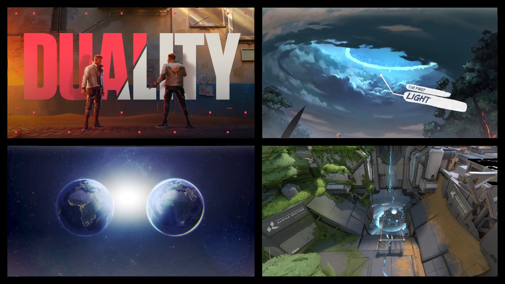

Introdução à História do Valorant
O universo de Valorant é rico em lore, com eventos que moldaram o mundo e os personagens que nele habitam. A história do jogo é contada através de eventos, missões e interações entre os agentes.
Eventos Principais
A seguir, apresentamos alguns dos eventos mais importantes que compõem a história do Valorant:
| Evento | Resumo da História |
|---|---|
| A Primeira Luz | Um evento global misterioso libera uma substância poderosa chamada Radianita, mudando a tecnologia e a vida na Terra para sempre. |
| Os Radiantes | A exposição à Radianita faz com que algumas pessoas ao redor do mundo ganhem superpoderes únicos. |
| O Protocolo Valorant | Uma organização secreta recruta os melhores agentes do planeta (humanos e Radiantes) para proteger o mundo das ameaças da Radianita. |
| A Terra Espelho | Os agentes descobrem que lutam contra cópias de si mesmos de uma dimensão paralela que tentam roubar a Radianita para salvar o próprio planeta. |
